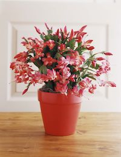
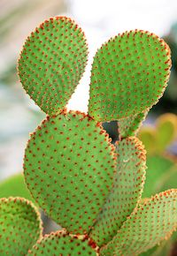
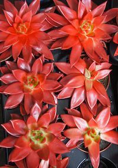
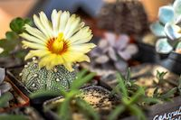
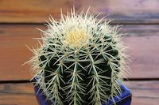
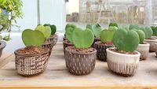
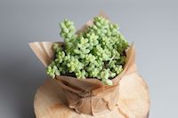
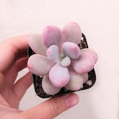

Succulents & Cacti
Many indoor plant growers do not take the right care of houseplants, especially if the plants are too demanding. The great news is that succulents and cacti do not require much attention. In fact, for them, less is more! Just make sure not to overdo watering as most of the desert plants die this way.
In any case, whether you want to add more succulents to your current troupe of plants or you're looking for the right plants to start your indoor garden, these are 10 of the most interesting—and some of the most popular—succulents out there
Moon Cactus
Christmas Cactus
Bunny Ear Cactus
Lipstick Echeveria
Parodia
Barrel Cactus
Hoya Heart
Donkey's Tail
Moonstone Succulent
Source: "types of cactus species"